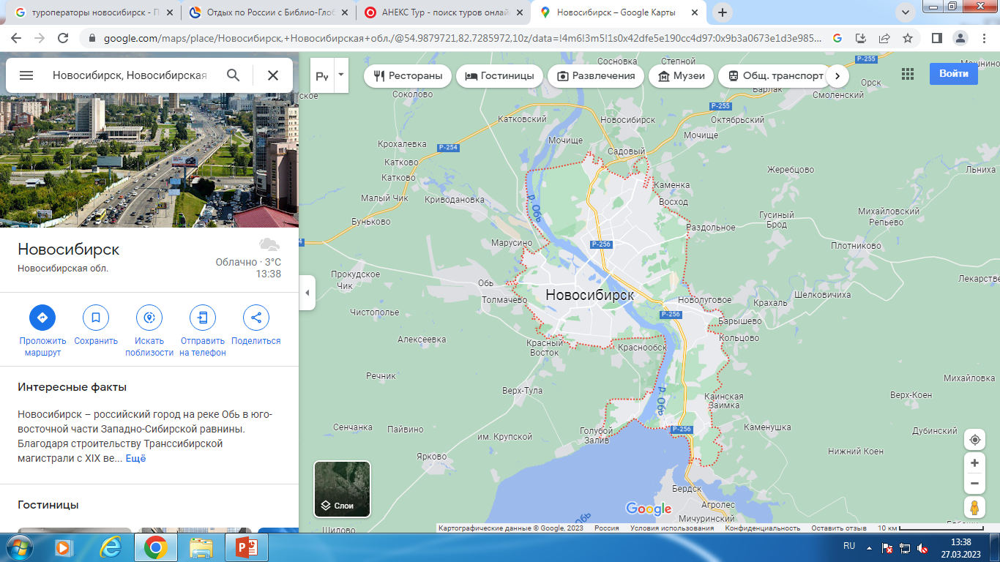
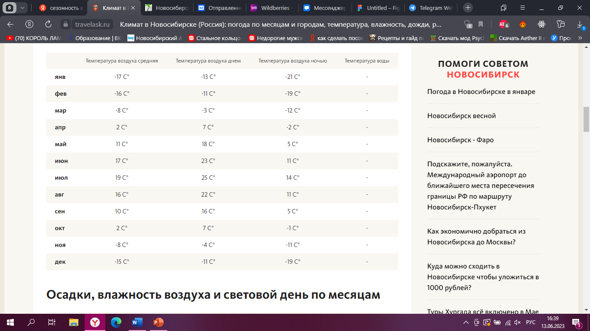
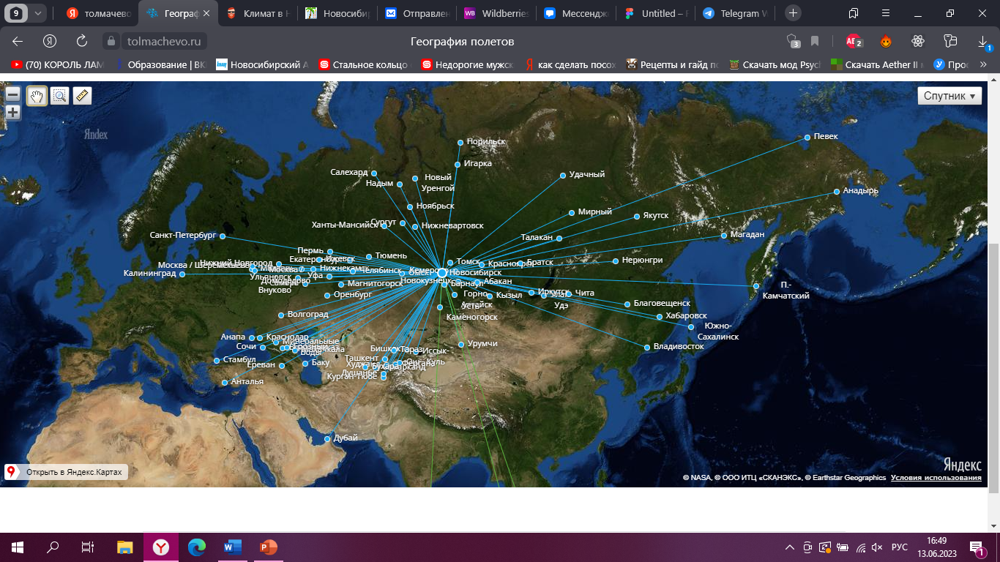
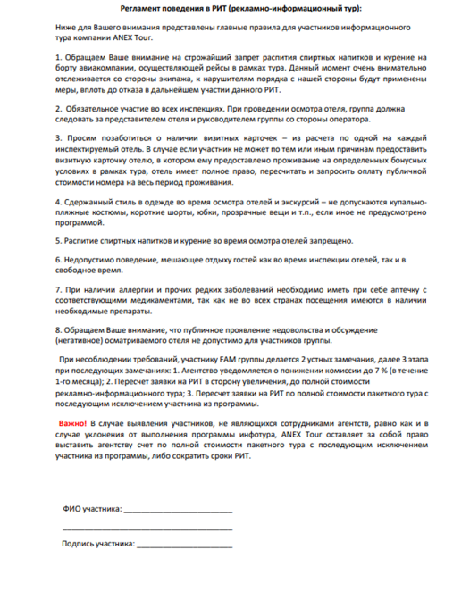

1 СЛАЙД: НАЗВАНИЕ ТУРА
2 СЛАЙД: ГЕОГРАФИЧЕСКОЕ ПОЛОЖЕНИЕ: Новосибирск – российский город на реке Обь в юго- восточной части Западно-Сибирской равнины. Благодаря строительству Транссибирской магистрали с XIX века город постоянно рос и развивался. Об этом напоминает первый железнодорожный мост через реку Обь, который существует и сегодня. В центре Новосибирска возвышается собор XIX века во имя Александра Невского с золотыми куполами в византийском стиле. Новосибирская область граничит на севере с Томской областью, на юго-западе – с Казахстаном, на западе – с Омской областью, на юге – с Алтайским краем, на востоке – с Кемеровской областью.
3 СЛАЙД: ВИДЫ ТУРИЗМА: -деловой -оздоровительный -рекреационный -детский -религиозный -этнический -развлекательный -культурно-познавательный -гастрономический -событийный
4 СЛАЙД: СЕЗОННОСТЬ: Лето теплое, зима морозная
5 СЛАЙД: ТРАДИЦИИ: праздники отмечает Новосибирск. Например: масленица, троица, день города День Ивана Купалы в Новосибирске 7 июля 2022 года — самый мокрый и веселый день лета. На улице, особенно в центре города и на пляжах, не увернуться от брызг из пистолетов, бутылок и пластиковых ведер. Официальные мероприятия в честь праздника пройдут на пляжах, в парках и музеях. Публикуем полную афишу.
6 СЛАЙД: санэпидемстанция в НОВОСИБИРСКЕ: С 1 мая 2023 года в Новосибирской области отменили все ограничения, которые были введены из-за COVID-19. Отмена медицинских масок и QR-кодов
7 СЛАЙД: КОНЦЕПЦИЯ ТУРА: концепция нашего тура- показать, что (сказка существует и чудеса возможны)….(семейный отдых тоже может быть прекраснам)….(спорт-открывает новые границы твоего мышления и силы)…..
8 СЛАЙД: ПРОГРАММА ТУРА: ДЕНЬ 1… ВСТРЕЧА ТУРИСТОВ В 11:00
9 СЛАЙД: АКТУАЛЬНОСТЬ: Данный тур отлично подходит для молодых и энергичных, жизнерадостных людей, которые готовы отдохнуть, выплеснуть эмоции и которые не бояться пробовать что-то новое!
10 СЛАЙД: ЦЕЛЕВАЯ АУДИТОРИЯ: ТУР ПОДХОДИТ ДЛЯ СЕМЕЙНЫХ ПАР, ДЛЯ ЛЮДЕЙ С ПРИКЛОННЫМ ВОЗРАСТОМ, ДЛЯ ЛЮДЕЙ С ОГРАНИЧЕННОЙ ВОЗМОЖНОСТИ ЗДОРОВЬЯ…..
11 СЛАЙД: ВИДЫ ТРАНСПОРТА В НОВОСИБИРСКЕ: автобусы, трамваи, маршрутное такси, такси, троллейбусы, салолеты, электрички, теплоходы и дт
12 СЛАЙД: ТРАНСПОРТНЫЕ ВОЗМОЖНОСТИ: аэропорт, речпорт, автовокзал, ЖД вокзал
13 СЛАЙД: ГЛАВНЫЕ ТРАССЫ НОВОСИБИРСКА: -«Чу́йский тракт» (Р256) - обход г.Кемерово (Р-255)- подъезд к г.Томск (Р-255)-Омск - Черлак - граница с Республикой Казахстан (А-320)-"Иртыш" Челябинск - Курган - Омск – Новосибирск (Р-254)
14 СЛАЙД: ПЕРЕЧЕСЛЕНИЕ АВИА КОМПАНИЙ: S7, AZURAIR, FLYDUBAI, URALAIRLINES И ТД
15 СЛАЙД: МЕСТНАЯ АВИАКОМПАНИЯ: S7 В 2001 году авиакомпания «Сибирь» стала действительным членом Международной Ассоциации Воздушного Транспорта IATA[13]. В течение 2001 года авиакомпания выполнила 15 тыс. 490 рейсов и перевезла около 2 млн человек, что сделало компанию второй в стране по количеству перевезённых пассажиров[14].В 2005-2006 годах компания провела ребрендинг, сменив наименование «Сибирь» на S7 Airlines, на базе авиакомпании была создана S7 Group
16 СЛАЙД: МАРШРУТНАЯ СЕТЬ АВИАКОМПАНИЙ:
17 СЛАЙД: ИНЫЕ ПЕРЕВОЗЩИКИ: ржд, мегаполис....
18 СЛАЙД: ПОЛЕТНАЯ ПРОГРАММА: ссылка
19 СЛАЙД: ВЫБОР ПАРТНЕРА ПЕРЕВОЗЩИКА: S7
20 СЛАЙД: КОЛЛИЧЕСТВО ПАРТНЕРОВ РАЗМЕЦЕНИЯ: 269 гостиниц: 1-5*:10-4*:17-3* 84 хостела 107 баз отдыха
21 СЛАЙД: ВЫБОР ПАРТНЕРА СРЕДСТВ РАЗМЕЩЕНИЯ: НАЗВАНИЕ ОТЕЛЯ, ОПИСАНИЕ, СКОЛЬКО В НЕМ НОМЕРОВ
22 СЛАЙД: ОПИСАНИЕ НОМЕРА
23 СЛАЙД: КОЛЛИЧЕСТВО РЕСТОРАНОВ: 206 кафе: 37 ресторанов премиум класса, 2816 пунктов быстрого питания. ВСЕГО: 3 059 ПУНКТОВ ПИТАНИЯ В НОВОСИБИРСКОЙ ОБЛАСТИ
24 СЛАЙД: ГДЕ БУДУТ ПИТАТЬСЯ ТУРИСТЫ/ВЫБОР ТОЧЕК ПИТАНИЯ:……..исходя от тура
25 СЛАЙД: ДОСТОПРИМЕЧАТЕЛЬНОСТИ В ТУРЕ:…..исходя от тура
26 СЛАЙД: ПОПУЛЯРНЫЕ ДОСТОПРИМЕЧАТЕЛЬНОСТИ У ТУРИСТОВ: НОВАТ, ЗООПАРК, СОБОР АЛЕКСАНДРА НЕВСКОГО И ГЛОБУС
27 СЛАЙД: схема работы с постовщиками: Элотмент — это заказ «мягкого блока» номеров без предоплаты, Комитмент- это заказ «жесткого блока» номеров с предоплатой.
28СЛАЙД: РЕКЛАМА: -в метро-на автобусах-имеются визитки с информацией-на нашем сайте (лендинг)-телеграмм канал -в интернете
29 СЛАЙД: КОНКУРЕНТЫ:
30 СЛАЙД: СРОКИ ОКУПАЕМОСТИ: Коэффициент сезонности месяца = Продажи в штуках этого месяца / на средние продажи за год. Т е: РАСЧИТАТЬ ТОЧКУ БЕЗУБЫТОЧНОСТИ: 100 000:разницу тура-себестоимость тура=…….
КОНЕЦ: НАШ ТУР ИМЕЕТ ПРАКТИЧЕСКУЮ ЗНАЧИМОТЬ. ГОТОВЫ ОТВЕТИТЬ НА ВАШИ ВОПРОСЫ
РЕКЛАМНЫЙ ТУР
1 СЛАЙД: НАЗВАНИЕ
2 СЛАЙД: ТРАНСФЕР
3 СЛАЙД: ПОКАЗАТЬ НАПРАВЛЕНИЕ: ТУРЦИЯ:………
4 СЛАЙД: КАК ПОПУЛЯРНА ДАННАЯ СТРАНА У ТУРИСТОВ
5 СЛАЙД: ПОКАЗАТЬ КУРОРТ, ГДЕ НАХОДИТЬСЯ ОТЕЛЬ: название, описание.
6 СЛАЙД: Цель: Знакомство турагентств с популярным направлением и отелями премиум класса в Турции, увеличение уровня продаж.
Задачи:
- познакомить с Турцией
- изучить регионы Туриции
- ознакомить с отелями
- замотивировать к продажам данного направления
6 СЛАЙД: ЦА РЕКЛАМНИКА: Независимые агентства, директора турфирм, ТОП менеджеры
7 СЛАЙД: УСЛОВИЯ УЧАСТИЯ В РИТ: -Необходимо подать заявку-Условия аннуляции согласно условиям договора-Представители турагенства обязуются соблюдать все меры безопасности
8 СЛАЙД: ПРАВИЛА УЧАСТИЯ В РИТ: 1. Обращаем Ваше внимание на строжайший запрет распития спиртных напитков и курение на борту авиакомпании, осуществляющей рейсы в рамках тура. Данный момент очень внимательно отслеживается со стороны экипажа, к нарушителям порядка с нашей стороны будут применены меры, вплоть до отказа в дальнейшем участии данного РИТ. 2. Обязательное участие во всех инспекциях. При проведении осмотра отеля, группа должна следовать за представителем отеля и руководителем группы со стороны оператора. 3. Просим позаботиться о наличии визитных карточек – из расчета по одной на каждый инспектируемый отель. В случае если участник не может по тем или иным причинам предоставить визитную карточку отелю, в котором ему предоставлено проживание на определенных бонусных условиях в рамках тура, отель имеет полное право, пересчитать и запросить оплату публичной стоимости номера на весь период проживания. 4. Сдержанный стиль в одежде во время осмотра отелей и экскурсий – не допускаются купальнопляжные костюмы, короткие шорты, юбки, прозрачные вещи и т.п., если иное не предусмотрено программой. 5. Распитие спиртных напитков и курение во время осмотра отелей запрещено. 6. Недопустимо поведение, мешающее отдыху гостей как во время инспекции отелей, так и в свободное время. 7. При наличии аллергии и прочих редких заболеваний необходимо иметь при себе аптечку с соответствующими медикаментами, так как не во всех странах посещения имеются в наличии необходимые препараты. 8. Обращаем Ваше внимание, что публичное проявление недовольства и обсуждение (негативное) осматриваемого отеля не допустимо для участников группы.
9 СЛАЙД: ПРИОРЕТЕТ В ПОДТВЕРЖДЕНИИ ЗАЯВКИ: -Турагенствам реализующим наибольший объем продаж по данному направлению-Франчайзинговым турагенствам
10 СЛАЙД: УСЛОВИЯ УЧАСТИЯ: -Необходимо подать заявку-Условия аннуляции согласно условиям договора-Представители турагенства обязуются соблюдать все меры безопасности
11 СЛАЙД: ПОДПИСАНИЕ РЕГЛАМЕНТА:
12 СЛАЙД: ПЕРЕЧЕНЬ ОБЪЕКТОВ/ПРОГРАММА:
- ПРИМЕР:
- 22:05-Вылет из Москвы (Домодедово)
- 8:45-прилет на Мальдивы (Мале)
- 14:30-Размещение в гидросамолете
- 15:05-Прибытие на первый объект (KURAMATHI MALDIVES 4*)
- 15:30-обед на территории отеля
- 18:00-размещение в гидросамотеле
- 19:00-прибытие на второй объект (Sun Siyam Olhuveli 4*)
- 21:00-обед в ресторане на территории отеля
- 22:00-Размещение в гидросамолете
- 22:40-прибытие в аэропорт Мале
- 00:55-Вылет из аэропорта
- 15:25-Прибытие в Москву (Домодедово)
13 СЛАЙД: СХЕМА МАРШРУТА: от аэропорта до отеля
14 СЛАЙД: ГЕОГРАФИЧЕСКОЕ ПОЛОЖЕНИЕ: описание+карта
15 СЛАЙД: КЛИМАТ
16 СЛАЙД: ОСНОВНЫЕ КУРОРТЫ
17 СЛАЙД: ВИДЫ ТУРИЗМА: Пляжный Активный Детский познавательный ВИП-туры свадебные туры.
18 СЛАЙД: МЕРЫ ПРЕДОСТОРОЖНОСТИ:
- 1. Не забывайте о карманниках
- 2. В лагунах отсутствуют сильные течения, а мелкие крабики и ракушки на берегу вряд ли могут стать источником опасности
- 3. Не забывайте документы в отеле
- 4. Нельзя забывать о коварном солнце
- 5. Не забывайте о гигиене
19 СЛАЙД: ПЕРВЫЙ/ВТОРОЙ ОТЕЛЬ: название, расположение, адрес, телефон, ссылка на сайт
20 СЛАЙД: РАССТОЯНИЕ ОТ И ДО АЭРОПОРТА + ПЕРВАЯ ЛИНИЯ + ДАТА ПОСТРОЙ И СКОЛЬКО НОМЕРОВ ВСЕГО + ОБЩАЯ ПЛОЩАДЬ ОТЕЛЯ
21 СЛАЙД: ИНФРАСТРУКТУРА ЗА ОТЕЛЕМ: МУЗЕЙ.СКВЕРЫ И ТД….
22 СЛАЙД: ДОП УСЛУГИ НА ТЕРРИТОРИИ ОТЕЛЯ (описать 2-3 основные услуги без деления на ЦА)
23 СЛАЙД: ПОЛНЫЙ СПИСОК НОМЕРОВ В ОТЕЛЕ
24 СЛАЙД: ПЕРВЫЙ/ВТОРОЙ НОМЕР: описание номера и стоимость + ЦА
25 СЛАЙД: ТИП ПИТАНИЯ, РАСПИСАНИЕ И ОПИСАНИЕ ОСНОВНОГО РЕСТОРАНА
26 СЛАЙД: УСЛУГИ В ОТЕЛЕ: разбивка на платные/бесплатные + дет/взр
27 СЛАЙД: КОНЦЕПЦИЯ ОТДЫХА В ОТЕЛЕ. Например: ВСЕ ВКЛЮЧЕНО, СПОКОЙНЫЙ ОТДЫХ ДЛЯ СЕМЬИ И ТД….
28 СЛАЙД: схема работы с постовщиками: Элотмент — это заказ «мягкого блока» номеров без предоплаты, Комитмент- это заказ «жесткого блока» номеров с предоплатой.
29 СЛАЙД: АКЦИИ И БОНУСЫ: -для новых туристов отели предлагают апгрейд номера -максимальная комиссия для туроператоров в период июня-дополнительная процедура массажа в обоих отелях
КОНЕЦ: МЫ ЖЕЛАЕМ ВАМ БЛАГОПОЛУЧНОГО ПОЛЕТА ДОМОЙ И УДАЧНЫХ ПРОДАЖ!